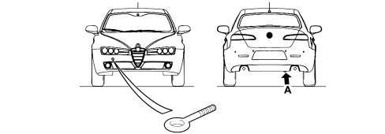

Applies to: all engines; all production periods
The vehicle is equipped with a tow hook located in the automatic Fix&Go container.
To fit the tow hook, proceed as follows:
- undo the plug on the front bumper to gain access to the threaded pin on the body;
- take the tow hook out of the Fix&Go container;
- fully tighten the ring on the threaded front pin.
There is a special hook (A) at the rear of the vehicle fitted directly onto the body to attach to for towing.

General warnings